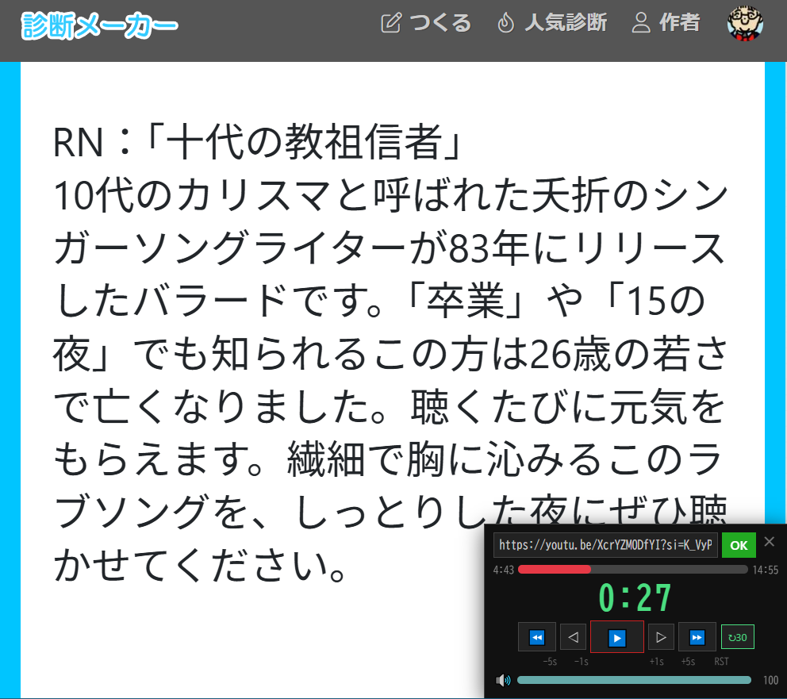

🎵 このリクエスト曲なんだっけクイズ
ラジオDJになりきって、曲フリを決めろ！
🎮 ゲームの概要
これは「診断メーカー」が生成するラジオのリクエストメッセージを使ったクイズです。
回答者はラジオDJになりきってリクエスト文を読み上げながら、そのメッセージが何の曲に対するリクエストなのかを推理し、最後に「曲フリ」を決めます。タイミングぴったりでサビが始まったら大成功！
必要なもの：診断メーカーのページと、下の「YT音のみ再生」ツールだけ。

🔮 診断メーカーを開く
📋 準備（出題者がやること）
診断メーカーで任意の共有ナンバーを入力して診断を実行します。
診断結果の下のほうに表示される「歌手名」と「曲名」を確認します。（これが答えです）
YouTube等でその曲を検索。「YT音のみ再生」ツールで読み込み、サビの約30秒前まで再生位置を調整して一時停止しておきます。
⚠ 回答者には「ページの下のほう（歌手名・曲名）は見ないでね」と伝えてください。
🎤 ゲームの進行（回答者がやること）
回答者は診断結果の「ラジオネーム」を声に出して読み上げます。これが開始の合図です。
読み上げた直後、出題者が曲を再生します。（30秒カウントダウンが始まります）
曲が流れる中、回答者はDJになりきってリクエストメッセージを約30秒かけて朗読します。メッセージの内容から曲名・歌手名を推理してください。
「○○さんの『○○』です、どうぞ！」
🎉 カウントダウンがゼロになるタイミングで曲フリが決まり、ピッタリサビが始まったら大成功！
🔧 「YT音のみ再生」ツールとは？
YouTubeの動画を画面なし・音声だけで再生できるツールです。診断メーカーのページを開いたまま、その上に小さな音楽プレイヤーを表示します。
ブックマークレットという仕組みで動きます。一度登録すれば、あとはワンタップで呼び出せます。
📱 スマホ（Chrome）での登録方法
まず下の「コピー」ボタンをタップして、コードをコピーします。
Chromeで適当なページを開いて、☆マークからブックマークに保存します。
Chromeのブックマーク一覧を開き、今作ったブックマークを長押し → 編集。
名前を「YT音のみ再生」に変更。URL欄を全消しして、コピーしたコードを貼り付けて保存。
📌 コピー用コード
🖥️ PC（Chrome等）での登録方法
下の 🎵 YT音のみ再生 ボタンを、ブラウザのブックマークバーにドラッグ＆ドロップします。それだけで登録完了です。
🎧 ツールの使い方
▶️ 起動する
PCブックマークバーの「YT音のみ再生」をクリック。
スマホアドレスバーをタップして「YT音のみ」と入力。候補に表示されたブックマークをタップ。
⚠ スマホではブックマーク一覧からのタップでは動作しません。必ずアドレスバーに入力して候補から選んでください。
🎶 曲を読み込む
画面右下にプレイヤーが表示されます。YouTubeのURLを貼り付けて「読込」ボタンをタップ。OK になったら準備完了です。
🎤 再生・操作
▶️ 再生 / 停止（押すとカウントダウンが始まります）
⏪ 5秒戻る ◁ 1秒戻る ▷ 1秒進む ⏩ 5秒進む
↻30 30秒カウントダウンをリセット
🔊 タップでミュート切替
■赤いバー → 再生位置（タップでシーク）
■水色のバー → 音量（タップで調整）
❍ 閉じる
プレイヤー右上の ✕ をタップ、またはブックマークをもう一度実行すると閉じます。